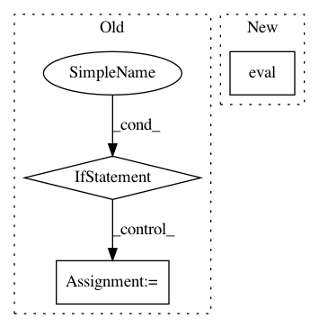

19f6bfac9d39794db025dc53f8921346f58080b9,enjoy.py,,,#,12
Before Change
render_func = None
tmp_env = env
while True:
if hasattr(tmp_env, "envs"):
render_func = tmp_env.envs[0].render
break
elif hasattr(tmp_env, "venv"):
tmp_env = tmp_env.venv
elif hasattr(tmp_env, "env"):
tmp_env = tmp_env.env
else:
break
// We need to use the same statistics for normalization as used in training
actor_critic, ob_rms = \
torch.load(os.path.join(args.load_dir, args.env_name + ".pt"))
if isinstance(env.venv, VecNormalize):
After Change
vec_norm = get_vec_normalize(envs)
if vec_norm is not None:
vec_norm.eval()
vec_norm.ob_rms = ob_rms
recurrent_hidden_states = torch.zeros(1, actor_critic.recurrent_hidden_state_size)
masks = torch.zeros(1, 1)
In pattern: SUPERPATTERN
Frequency: 4
Non-data size: 3
Instances
Project Name: ikostrikov/pytorch-a2c-ppo-acktr
Commit Name: 19f6bfac9d39794db025dc53f8921346f58080b9
Time: 2018-09-17
Author: meinhardt.tim@gmail.com
File Name: enjoy.py
Class Name:
Method Name:
Project Name: CSAILVision/places365
Commit Name: 3a4a56e15dc30e5f7d9c4c7706f5710d1da73e52
Time: 2018-05-02
Author: zhoubolei@gmail.com
File Name: run_placesCNN_unified.py
Class Name:
Method Name: load_model
Project Name: Microsoft/MMdnn
Commit Name: e3dbf30b449033ee584159dc0e462741d4e0e15b
Time: 2020-07-31
Author: 50827462+XiaoXYe@users.noreply.github.com
File Name: mmdnn/conversion/pytorch/pytorch_graph.py
Class Name: PytorchGraph151
Method Name: extractgraph
Project Name: ikostrikov/pytorch-a2c-ppo-acktr
Commit Name: 19f6bfac9d39794db025dc53f8921346f58080b9
Time: 2018-09-17
Author: meinhardt.tim@gmail.com
File Name: main.py
Class Name:
Method Name: main